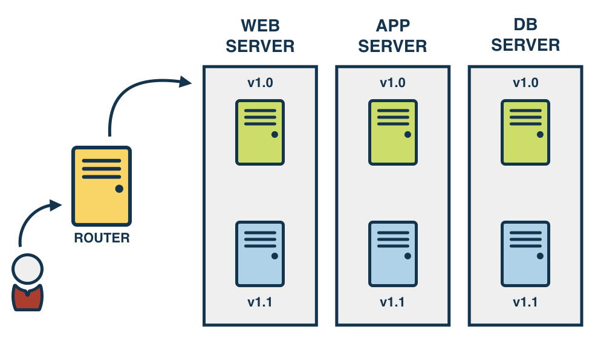

In the previous article on Continuous Deployment Strategies, we explored at a high level some of the popular CD strategies.
This article describes some of the implementation techniques for performing blue/green deployments.
Blue/green is a technique for deployments where the existing running deployment is left in place. A new version of the application is installed in parallel with the existing version. When the new version is ready, cut over to the new version by changing the load balancer configuration.
The basic idea behind this technique is to be able to route users to either the green set of servers, or the blue set of servers.
This can be achieved in multiple ways:
- Changing the load balancer/router
- Changing public DNS records
- Load Balancer + Internal DNS records
Changing the load balancer/router

Using this technique you would change the load balancer or request router to point to either the blue server or the green server.
Changing public DNS records
Using this technique involves load-balancing at the DNS level by changing either the CNAME or the A records. When users request a DNS entry for your website, your DNS server could return the IP address for either the blue server or the green server. This particular approach would require that the time to live (TTL) is set to a very small value.

This particular approach is not recommended for changing public DNS records because some DNS servers run some browsers don’t respect the low TTL values on the DNS entry, they will cache the DNS records for longer than the TTL. This may leave a subset of your users not being able to access your website.
Load Balancer + Internal DNS records
This approach is a combination of the two techniques we’ve seen so far.

In this technique, instead of changing public DNS records, we’ll change internal (private) DNS records. Since the internal network and the DNS server can be managed and configured to respect TTLs, this approach works a lot better than changing public DNS records.
This article was first published on the SnapCI Blog.